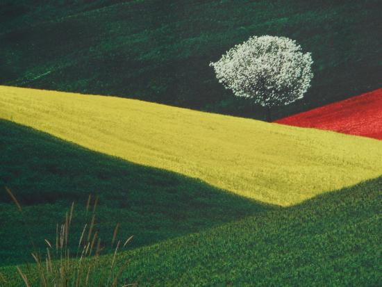

In this monthly addition of ScapeLand our landscape photographer is the unique, Franco Fontana.
“The purpose of art,” says Franco Fontana, “is to make visible the invisible.” This could seem like a strange thing for a photographer to say since the essential purpose of the camera is to capture the visible. But even though we are all looking at the same world, what each of us sees is unique. We each notice different elements of the physical universe: different shapes, different colors, different forms and different objects; and we each perceive in the things we see different meanings, different possibilities, and different purposes. Each of our private visual worlds is a secret: invisible, known only to us—unless, as Fontana suggests, we find a way to make it visible to others through art.